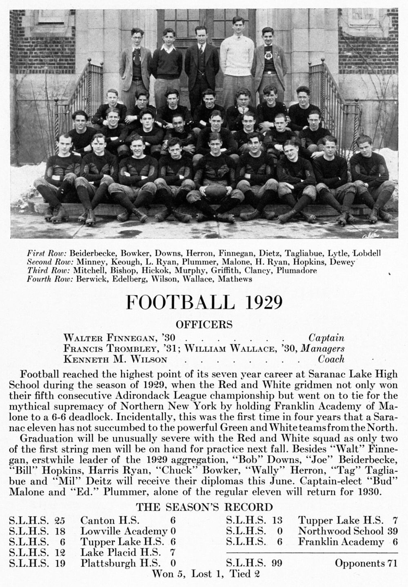

Saranac Lake Redskins · Football since 1923
The Film Room
Every game we can find, from the first kickoff against Mineville in 1923 to today: scores, newspaper write-ups, rosters, team photos and game film.
- 346games
- 88seasons
- 49films
- 34title seasons
Featured film · 1983 Class C Super Bowl vs AuSable Valley
1983 Class C Superbowl Saranac Lake Redskins vs Ausable Valley Patriots · adkdon · 2:27:20 · YouTube
adkdon’s film archive
Uploaded by adkdon adkdon’s film1983 vs AuSable Valleyadkdon · 2:27:20
adkdon’s film1983 vs AuSable Valleyadkdon · 2:27:20 W 25–7adkdon’s film1987 vs Mount Assumption Instituteadkdon · 1:05:15
W 25–7adkdon’s film1987 vs Mount Assumption Instituteadkdon · 1:05:15 W 25–7adkdon’s film1987 vs Mount Assumption Instituteadkdon · 6:06:15
W 25–7adkdon’s film1987 vs Mount Assumption Instituteadkdon · 6:06:15 L 0–26adkdon’s film1987 vs Watertownadkdon · 1:29:25
L 0–26adkdon’s film1987 vs Watertownadkdon · 1:29:25 W 7–0adkdon’s film1987 vs St. John's Academy (Plattsburgh)adkdon · 54:55
W 7–0adkdon’s film1987 vs St. John's Academy (Plattsburgh)adkdon · 54:55 adkdon’s film1987 Saranac Lake NY High School Homecomingadkdon · 41:49
adkdon’s film1987 Saranac Lake NY High School Homecomingadkdon · 41:49The Massena series, 1957–2010
Massena Sports Archive L 0–91957 at MassenaMassena Sports Archive · 22:45
L 0–91957 at MassenaMassena Sports Archive · 22:45 L 0–201958 vs MassenaMassena Sports Archive · 24:28
L 0–201958 vs MassenaMassena Sports Archive · 24:28 W 7–61961 at MassenaMassena Sports Archive · 27:17
W 7–61961 at MassenaMassena Sports Archive · 27:17 L 14–261964 vs MassenaMassena Sports Archive · 26:19
L 14–261964 vs MassenaMassena Sports Archive · 26:19 L 0–471965 at MassenaMassena Sports Archive · 16:46
L 0–471965 at MassenaMassena Sports Archive · 16:46 L 6–261967 at MassenaMassena Sports Archive · 23:49
L 6–261967 at MassenaMassena Sports Archive · 23:49 L 0–301969 at MassenaMassena Sports Archive · 17:42
L 0–301969 at MassenaMassena Sports Archive · 17:42 L 7–191970 vs MassenaMassena Sports Archive · 27:30
L 7–191970 vs MassenaMassena Sports Archive · 27:30 L 12–181971 at MassenaMassena Sports Archive · 24:23
L 12–181971 at MassenaMassena Sports Archive · 24:23 L 13–341973 vs MassenaMassena Sports Archive · 23:53
L 13–341973 vs MassenaMassena Sports Archive · 23:53 T 14–141976 at MassenaMassena Sports Archive · 12:28
T 14–141976 at MassenaMassena Sports Archive · 12:28 L 0–81978 at MassenaMassena Sports Archive · 8:24
L 0–81978 at MassenaMassena Sports Archive · 8:24 L 6–331979 vs MassenaMassena Sports Archive · 25:40
L 6–331979 vs MassenaMassena Sports Archive · 25:40 L 7–121980 at MassenaMassena Sports Archive · 26:09
L 7–121980 at MassenaMassena Sports Archive · 26:09 L 6–111982 vs MassenaMassena Sports Archive · 10:35
L 6–111982 vs MassenaMassena Sports Archive · 10:35 1998 Saranac Lake @ Massena (Home Movie)Massena Sports Archive · 14:29
1998 Saranac Lake @ Massena (Home Movie)Massena Sports Archive · 14:29 1998 Saranac Lake @ Massena (NO AUDIO)Massena Sports Archive · 22:49
1998 Saranac Lake @ Massena (NO AUDIO)Massena Sports Archive · 22:49 W 42–72004 at MassenaMassena Sports Archive · 29:59
W 42–72004 at MassenaMassena Sports Archive · 29:59 W 41–02010 vs MassenaMassena Sports Archive · 40:53
W 41–02010 vs MassenaMassena Sports Archive · 40:53The ’90s run
1991–2001, including the 1995 Carrier Dome season W 14–61991 vs Seton CatholicHome Town Cable Network · 1:37:55
W 14–61991 vs Seton CatholicHome Town Cable Network · 1:37:55 W 14–61994 vs Saranac Central (Chiefs)VinnyXwolf · 1:50:35
W 14–61994 vs Saranac Central (Chiefs)VinnyXwolf · 1:50:35 W 26–21995 vs MoriahVinnyXwolf · 2:03:57
W 26–21995 vs MoriahVinnyXwolf · 2:03:57 W 28–271995 vs CambridgeVinnyXwolf · 1:59:09
W 28–271995 vs CambridgeVinnyXwolf · 1:59:09 1995 vs HighlandVinnyXwolf · 1:54:18
1995 vs HighlandVinnyXwolf · 1:54:18 L 27–371995 vs Le RoyVinnyXwolf · 2:06:46
L 27–371995 vs Le RoyVinnyXwolf · 2:06:46 W 14–71995 vs AuSable ValleyVinnyXwolf · 0:37
W 14–71995 vs AuSable ValleyVinnyXwolf · 0:37 L 18–201996 vs PeruVinnyXwolf · 2:44:42
L 18–201996 vs PeruVinnyXwolf · 2:44:42 W 34–61996 vs PlattsburghVinnyXwolf · 2:21:05
W 34–61996 vs PlattsburghVinnyXwolf · 2:21:05 L 14–251996 vs BeekmantownVinnyXwolf · 1:44:26
L 14–251996 vs BeekmantownVinnyXwolf · 1:44:26 W 32–121996 vs Saranac Central (Chiefs)VinnyXwolf · 2:33:15
W 32–121996 vs Saranac Central (Chiefs)VinnyXwolf · 2:33:15 W 39–121996 vs TiconderogaVinnyXwolf · 2:26:10
W 39–121996 vs TiconderogaVinnyXwolf · 2:26:10 W 28–201996 vs AuSable ValleyVinnyXwolf · 2:48:34
W 28–201996 vs AuSable ValleyVinnyXwolf · 2:48:34 1996 Saranac Lake Tupper LakeVinnyXwolf · 2:05:43
1996 Saranac Lake Tupper LakeVinnyXwolf · 2:05:43 W 42–71997 vs BeekmantownVinnyXwolf · 2:31:23
W 42–71997 vs BeekmantownVinnyXwolf · 2:31:23 W 48–01997 vs MoriahVinnyXwolf · 1:00:16
W 48–01997 vs MoriahVinnyXwolf · 1:00:16 W 35–01997 vs Tupper LakeVinnyXwolf · 2:26:33
W 35–01997 vs Tupper LakeVinnyXwolf · 2:26:33 W 31–01998 vs Tupper LakeVinnyXwolf · 3:00:23
W 31–01998 vs Tupper LakeVinnyXwolf · 3:00:23 Beekmantown - Saranac Football 10-2-99Home Town Cable Network · 1:04:32
Beekmantown - Saranac Football 10-2-99Home Town Cable Network · 1:04:32 W 15–71999 vs Tupper LakeHome Town Cable Network · 1:57:24
W 15–71999 vs Tupper LakeHome Town Cable Network · 1:57:24 L 6–352001 vs PeruHome Town Cable Network · 1:55:03
L 6–352001 vs PeruHome Town Cable Network · 1:55:03Hall of Fame & modern era


The film vault · 1970–1988
Reels from these seasons are being digitized and will appear here.19701 film online3-2-119711 film online3-21972Film wanted2-419731 film online7-1-01974Film wanted6-1-11975Film wanted6-1-1 · Title19761 film online3-0-1 · Title19771 film online8-0-0 · Title19781 film online2-1-119791 film online3-219801 film online1-1 · Title1981Film wanted8-0 · Title19821 film online2-319831 film online4-2 · Title1984Film wanted2-41985Film wanted3-41986Film wanted5-419875 films online8-2 · Title1988Film wanted9-1 · Title
Have film, a program, or photos from this season? Contact us
Scoreboard
346 games, 300 with final scores. unverified marks scores not yet checked by hand.346 games
- ?2022 · Date unknownvs PlattsburghScore unknown
- ?2022 · Date unknownvs BeekmantownScore unknown
- W2021 · Date unknownvs Saranac Central (Chiefs)36–35
- W2020 · About Apr 1, 2021vs BeekmantownScore unknown
- W2020 · About Apr 1, 2021vs Tupper LakeScore unknown
- W2019 · Nov 2, 2019vs AuSable Valley31–26Story
- W2018 · Sept 15, 2018vs AuSable Valley27–14
- ?2016 · Date unknownvs PeruScore unknown
- ?2015 · Date unknownvs PeruScore unknown
- ?2015 · Date unknownvs AuSable ValleyScore unknown
- ?2014 · Date unknownvs PeruScore unknown
- ?2014 · Date unknownvs AuSable ValleyScore unknown
- W2014 · Date unknownvs Tupper LakeScore unknown
- ?2012 · Date unknownvs Hoosick FallsScore unknown
- ?2012 · Date unknownvs PlattsburghScore unknown
- ?2012 · Date unknownvs AuSable ValleyScore unknown
- W2012 · Date unknownvs Ticonderoga30–6
- ?2011 · Date unknownvs AuSable ValleyScore unknown
- ?2010 · Date unknownvs Tupper LakeScore unknown
- ?2010 · Date unknownvs MoriahScore unknown
- W2010 · Oct 9, 2010vs Massena41–0Film
- L2007 · About Oct 27, 2007vs Beekmantown6–14unverified
- L2007 · About Oct 13, 2007vs Gouverneur0–14unverified
- W2007 · About Oct 6, 2007vs Moriah15–6unverified
- W2007 · About Sept 22, 2007vs Massena21–14unverified
- W2007 · About Sept 15, 2007vs Seton Catholic7–0unverified
- W2007 · About Sept 8, 2007vs Malone (Franklin Academy)53–14unverified
- ?2006 · Date unknownvs BeekmantownScore unknown
- ?2006 · Date unknownvs Malone (Franklin Academy)Score unknown
- W2006 · About Oct 7, 2006vs Ticonderoga28–6unverified
- W2005 · About Oct 1, 2005vs Malone (Franklin Academy)Score unknown
- W2004 · About Oct 23, 2004vs Tupper Lake40–3unverified
- W2004 · About Oct 2, 2004vs Ticonderoga49–6unverified
- W2004 · Sept 17, 2004at Massena42–7Film
- ?2003 · Date unknownvs MassenaScore unknown
- W2002 · About Nov 2, 2002vs Saranac Central (Chiefs)24–6unverified
- W2002 · About Oct 26, 2002vs Beekmantown41–16unverified
- L2002 · About Sept 7, 2002vs Tupper Lake6–24unverified
- W2001 · About Oct 27, 2001vs Beekmantown27–21unverified
- W2001 · About Oct 13, 2001vs Plattsburgh20–9unverified
- L2001 · About Oct 6, 2001vs Peru6–35unverifiedFilm
- W2001 · About Sept 15, 2001vs Ticonderoga7–6unverified
- ?2000 · Date unknownvs PeruScore unknown
- W1999 · About Oct 9, 1999vs Plattsburgh26–14unverified
- L1999 · About Oct 2, 1999vs AuSable Valley12–36unverified
- W1999 · About Sept 25, 1999vs Tupper Lake15–7unverifiedFilm
- W1999 · About Sept 18, 1999vs Saranac Central (Chiefs)34–6unverified
- W1999 · About Sept 4, 1999vs Seton Catholic12–0unverified
- W1998 · Date unknownvs Beekmantown35–6
- W1998 · About Oct 31, 1998vs Tupper Lake31–0unverifiedFilm
- W1998 · About Oct 31, 1998vs Saranac Central (Chiefs)53–12unverified
- W1998 · About Oct 24, 1998vs Seton Catholic47–0unverified
- W1998 · About Oct 17, 1998vs AuSable Valley41–19unverified
- W1998 · About Oct 10, 1998vs Peru21–3unverified
- W1998 · About Oct 3, 1998vs Moriah34–16unverified
- W1998 · About Sept 26, 1998vs Ticonderoga41–6unverified
- W1998 · About Sept 12, 1998vs Plattsburgh40–0unverified
- W1997 · About Nov 15, 1997vs Tupper Lake35–0unverifiedFilm
- W1997 · About Nov 15, 1997vs Moriah48–0unverifiedFilm
- W1997 · About Nov 1, 1997vs Saranac Central (Chiefs)44–0unverified
- W1997 · About Oct 18, 1997vs AuSable Valley28–0unverified
- L1997 · About Oct 11, 1997vs Peru6–23unverified
- W1997 · About Sept 27, 1997vs Ticonderoga51–0unverified
- W1997 · About Sept 20, 1997vs Beekmantown42–7unverifiedFilm
- W1996 · About Oct 19, 1996vs Ticonderoga39–12unverifiedFilm
- W1996 · About Oct 12, 1996vs AuSable Valley28–20unverifiedFilm
- W1996 · About Oct 5, 1996vs Saranac Central (Chiefs)32–12unverifiedFilm
- L1996 · About Sept 28, 1996vs Beekmantown14–25unverifiedFilm
- W1996 · About Sept 21, 1996vs Plattsburgh34–6unverifiedFilm
- W1996 · About Sept 14, 1996vs Moriah40–14unverified
- L1996 · About Sept 7, 1996vs Peru18–20unverifiedFilm
- L1995 · Date unknownvs Le Roy27–37Film
- W1995 · Nov 18, 1995vs HighlandScore unknownFilm
- W1995 · About Nov 11, 1995vs Cambridge28–27unverifiedFilm
- W1995 · About Oct 28, 1995vs Tupper Lake41–0unverified
- W1995 · About Oct 21, 1995vs Seton Catholic28–6unverified
- W1995 · About Oct 14, 1995vs Ticonderoga41–19unverified
- W1995 · About Oct 7, 1995vs AuSable Valley14–7unverifiedFilm
- W1995 · About Sept 23, 1995vs Beekmantown15–6unverified
- W1995 · About Sept 16, 1995vs Plattsburgh33–8unverified
- W1995 · About Sept 9, 1995vs Moriah26–2unverifiedFilm
- L1994 · About Oct 29, 1994vs Tupper Lake10–14unverified
- W1994 · About Oct 22, 1994vs Plattsburgh35–27unverified
- W1994 · About Oct 8, 1994vs Saranac Central (Chiefs)14–6unverifiedFilm
- W1994 · About Oct 1, 1994vs Ticonderoga28–0unverified
- L1994 · About Sept 17, 1994vs Peru21–23unverified
- W1994 · About Sept 10, 1994vs Beekmantown21–6unverified
- W1994 · About Sept 3, 1994vs Seton Catholic38–14unverified
- L1993 · About Nov 13, 1993vs Cambridge7–14unverified
- W1993 · About Oct 30, 1993vs Tupper Lake42–12unverified
- W1993 · About Oct 23, 1993vs Plattsburgh33–7unverified
- W1993 · About Oct 16, 1993vs AuSable Valley35–18unverified
- W1993 · About Oct 9, 1993vs Saranac Central (Chiefs)25–0unverified
- W1993 · About Oct 2, 1993vs Ticonderoga42–6unverified
- W1993 · About Sept 25, 1993vs Moriah7–6unverified
- W1993 · About Sept 11, 1993vs Beekmantown19–8unverified
- L1993 · About Sept 4, 1993vs Seton Catholic0–32unverified
- ?1992 · Date unknownvs Tupper LakeScore unknown
- W1992 · About Oct 24, 1992vs Seton Catholic13–6unverified
- W1992 · About Oct 17, 1992vs AuSable Valley40–14unverified
- W1992 · About Oct 3, 1992vs Saranac Central (Chiefs)19–0unverified
- L1992 · About Sept 26, 1992vs Peru21–34unverified
- W1992 · About Sept 19, 1992vs Beekmantown20–8unverified
- W1992 · About Sept 12, 1992vs Ticonderoga6–0unverified
- W1991 · About Nov 2, 1991vs Tupper Lake35–0unverified
- W1991 · About Oct 26, 1991vs Seton Catholic14–6unverifiedFilm
- W1991 · About Oct 19, 1991vs AuSable Valley28–0unverified
- W1991 · About Oct 12, 1991vs Plattsburgh34–20unverified
- W1991 · About Oct 5, 1991vs Saranac Central (Chiefs)43–22unverified
- W1991 · About Sept 28, 1991vs Peru33–6unverified
- W1991 · About Sept 21, 1991vs Beekmantown34–6unverified
- W1991 · About Sept 14, 1991vs Ticonderoga38–32unverified
- W1990 · About Nov 10, 1990vs Moriah20–14unverified
- W1990 · About Nov 3, 1990vs Peru28–7unverified
- W1990 · About Oct 20, 1990vs Ticonderoga20–14unverified
- W1990 · About Oct 13, 1990vs Tupper Lake14–8unverified
- W1989 · Date unknownvs Taconic Hills28–14
- W1989 · About Nov 18, 1989vs St. Lawrence Central27–14unverified
- W1989 · About Nov 4, 1989vs Peru28–6unverified
- W1989 · About Oct 28, 1989vs Saranac Central (Chiefs)27–13unverified
- W1989 · About Oct 21, 1989vs Ticonderoga12–6unverified
- W1989 · About Sept 16, 1989vs AuSable Valley26–0unverified
- W1988 · Nov 19, 1988at Watertown21–12Story
- W1988 · Nov 12, 1988vs Mount Assumption Institute34–16
- L1988 · Nov 5, 1988at St. John's Academy (Plattsburgh)7–24
- W1988 · Oct 29, 1988vs Saranac Central (Chiefs)37–12
- W1988 · Oct 22, 1988vs Peru7–0
- W1988 · Oct 15, 1988vs Moriah21–6
- W1988 · Oct 8, 1988vs Plattsburgh28–0
- W1988 · Oct 1, 1988vs AuSable Valley20–14
- W1988 · Sept 24, 1988vs Beekmantown10–7
- W1988 · Sept 17, 1988vs Ticonderoga24–3
- L1987 · Nov 21, 1987vs Watertown0–26FilmStory
- W1987 · Nov 14, 1987vs Mount Assumption Institute25–7Film
- W1987 · Nov 7, 1987vs St. John's Academy (Plattsburgh)7–0FilmStory
- W1987 · Oct 31, 1987vs Saranac Central (Chiefs)25–7
- W1987 · Oct 24, 1987vs Peru15–0
- W1987 · Oct 17, 1987vs Moriah28–7
- W1987 · Oct 10, 1987vs Plattsburgh45–0
- W1987 · Oct 3, 1987vs AuSable Valley19–6
- W1987 · Sept 26, 1987vs Beekmantown6–0
- L1987 · Sept 19, 1987vs Ticonderoga6–7
- W1986 · Nov 8, 1986vs Mount Assumption Institute27–10Story
- W1986 · Nov 1, 1986vs Saranac Central (Chiefs)25–0
- W1986 · Oct 25, 1986vs AuSable Valley34–12
- L1986 · Oct 18, 1986vs Plattsburgh0–22
- L1986 · Oct 11, 1986vs Beekmantown6–33
- W1986 · Oct 4, 1986vs Moriah14–7
- W1986 · Sept 27, 1986vs St. John's Academy (Plattsburgh)7–6
- L1986 · Sept 20, 1986vs Ticonderoga6–27
- L1986 · Sept 13, 1986vs Peru0–25
- W1985 · Nov 2, 1985vs Saranac Central (Chiefs)30–16unverified
- W1985 · Oct 26, 1985vs AuSable Valley45–6
- L1985 · Oct 19, 1985vs Plattsburgh6–15
- L1985 · Oct 12, 1985vs Beekmantown0–35
- L1985 · Oct 5, 1985vs Moriah14–21
- W1985 · Sept 28, 1985vs St. John's Academy (Plattsburgh)34–6
- L1985 · Sept 14, 1985vs Peru6–7
- ?1984 · Date unknownvs PeruScore unknown
- W1984 · Date unknownvs Saranac Central (Chiefs)32–6
- W1984 · Nov 3, 1984vs Mount Assumption Institute14–0
- L1984 · Oct 13, 1984vs Plattsburgh13–16
- L1984 · Oct 6, 1984vs Beekmantown7–28
- L1984 · Sept 22, 1984vs St. John's Academy (Plattsburgh)0–7
- L1984 · Sept 15, 1984vs Ticonderoga0–27
- ?1983 · Date unknownvs AuSable ValleyScore unknownFilm
- L1983 · Oct 29, 1983vs Carthage15–19
- W1983 · Oct 22, 1983vs Potsdam14–0
- L1983 · Oct 8, 1983vs Malone (Franklin Academy)13–16
- W1983 · Oct 1, 1983vs Gouverneur6–0
- W1983 · Sept 24, 1983at Tupper Lake26–0
- W1983 · Sept 17, 1983vs Canton21–0Story
- W1982 · Date unknownvs Ogdensburg Free Academy3–0
- L1982 · Nov 5, 1982vs Massena6–11Film
- W1982 · Oct 30, 1982vs Potsdam21–14
- L1982 · Oct 23, 1982vs Canton20–21
- L1982 · Sept 18, 1982vs Malone (Franklin Academy)0–19
- L1981 · Nov 21, 1981vs Plattsburgh0–28unverified
- W1981 · Nov 7, 1981vs Potsdam20–0Story
- ?1981 · Oct 3, 1981vs Ogdensburg Free AcademyScore unknown
- L1980 · Oct 25, 1980at Massena7–12Film
- ?1980 · Oct 18, 1980vs Tupper LakeScore unknown
- W1980 · Oct 11, 1980vs St. Lawrence Central19–0
- ?1980 · Sept 13, 1980vs CarthageScore unknown
- W1979 · Nov 10, 1979vs Canton31–0unverified
- L1979 · Nov 3, 1979vs Massena6–33Film
- L1979 · Oct 27, 1979vs Tupper Lake16–30unverified
- W1979 · Oct 20, 1979vs St. Lawrence Central33–21unverified
- W1979 · Sept 22, 1979vs Carthage22–8
- T1978 · Date unknownvs St. Lawrence Central0–0unverified
- W1978 · Date unknownvs Tupper Lake7–6
- L1978 · Oct 28, 1978at Massena0–8FilmStory
- W1978 · Sept 23, 1978vs Canton27–6
- W1977 · Nov 5, 1977vs Potsdam33–12Story
- W1977 · Oct 29, 1977vs St. Lawrence Central25–0Story
- W1977 · Oct 22, 1977at Tupper Lake12–0
- W1977 · Oct 15, 1977vs Mount Assumption Institute20–0
- W1977 · Oct 8, 1977at Canton14–0Story
- W1977 · Oct 1, 1977vs Gouverneur18–0
- W1977 · Sept 24, 1977vs Massena8–0
- W1977 · Sept 17, 1977at Malone (Franklin Academy)20–7
- ?1976 · Date unknownvs GouverneurScore unknown
- T1976 · Oct 30, 1976at Massena14–14Film
- ?1976 · Oct 23, 1976at Ogdensburg Free AcademyScore unknown
- ?1976 · Oct 16, 1976vs Tupper LakeScore unknown
- W1976 · Oct 9, 1976at Potsdam20–6
- W1976 · Oct 2, 1976vs St. Lawrence Central27–0
- W1976 · Sept 18, 1976vs Canton21–6
- W1975 · Nov 1, 1975at Malone (Franklin Academy)6–0Story
- W1975 · Oct 25, 1975at Gouverneur31–8
- W1975 · Oct 18, 1975vs Potsdam13–8
- W1975 · Oct 11, 1975vs St. Lawrence Central8–0
- L1975 · Oct 4, 1975vs Ogdensburg Free Academy0–7
- T1975 · Sept 26, 1975at Tupper Lake0–0Story
- W1975 · Sept 20, 1975at Clifton-Fine21–0unverified
- W1975 · Sept 13, 1975vs Massena15–6
- L1974 · Nov 2, 1974vs Massena6–26
- W1974 · Oct 26, 1974at Gouverneur14–6
- W1974 · Oct 19, 1974vs Clifton-Fine34–6
- W1974 · Oct 12, 1974vs Potsdam14–7
- W1974 · Oct 5, 1974at Malone (Franklin Academy)20–8
- W1974 · Sept 28, 1974vs Tupper Lake20–6
- T1974 · Sept 21, 1974at Canton0–0Story
- W1974 · Sept 14, 1974vs Holy Family20–8Story
- W1973 · Oct 27, 1973vs St. Lawrence Central20–6unverified
- ?1973 · Oct 20, 1973vs PotsdamScore unknown
- W1973 · Oct 13, 1973vs Tupper Lake18–6
- W1973 · Oct 6, 1973vs Salmon River19–6
- L1973 · Sept 29, 1973vs Massena13–34unverifiedFilm
- W1973 · Sept 22, 1973vs Gouverneur15–6
- W1972 · Date unknownvs Salmon River12–0unverified
- W1972 · Date unknownvs Canton6–0unverified
- ?1972 · Oct 28, 1972vs Tupper LakeScore unknown
- L1972 · Oct 21, 1972vs St. Lawrence Central13–26
- L1972 · Oct 14, 1972vs Gouverneur0–25
- L1972 · Oct 7, 1972vs Malone (Franklin Academy)22–33
- L1972 · Sept 16, 1972vs Ogdensburg Free Academy3–16
- L1971 · Oct 30, 1971vs Gouverneur6–43
- L1971 · Oct 23, 1971at Massena12–18Film
- ?1971 · Oct 16, 1971vs Tupper LakeScore unknownStory
- ?1971 · Oct 9, 1971vs Ogdensburg Free AcademyScore unknown
- W1971 · Oct 2, 1971vs Canton9–0
- W1971 · Sept 25, 1971vs Salmon River30–6unverified
- W1971 · Sept 18, 1971vs Malone (Franklin Academy)16–6
- T1970 · Nov 7, 1970vs Potsdam8–8
- L1970 · Oct 31, 1970vs Ogdensburg Free Academy12–36
- ?1970 · Oct 24, 1970vs Tupper LakeScore unknown
- W1970 · Oct 17, 1970vs Canton18–6
- W1970 · Oct 10, 1970vs St. Lawrence Central14–8
- W1970 · Sept 26, 1970vs Salmon River14–8
- L1970 · Sept 19, 1970vs Massena7–19unverifiedFilm
- ?1969 · Date unknownvs Salmon RiverScore unknown
- L1969 · Sept 27, 1969at Massena0–30Film
- L1967 · Sept 23, 1967at Massena6–26Film
- L1965 · Nov 6, 1965at Massena0–47Film
- L1964 · Nov 7, 1964vs Massena14–26Film
- W1964 · About Oct 17, 1964vs Salmon River19–6unverified
- W1963 · Sept 14, 1963vs St. Lawrence Central26–0
- W1961 · Oct 28, 1961at Massena7–6FilmStory
- W1959 · Date unknownvs Tupper Lake13–6
- L1959 · About Oct 31, 1959vs Canton7–14unverified
- W1959 · About Oct 17, 1959vs Ogdensburg Free Academy19–14unverified
- L1958 · About Oct 25, 1958vs Gouverneur0–25unverified
- L1958 · Sept 27, 1958vs Massena0–20Film
- L1958 · About Sept 13, 1958vs Malone (Franklin Academy)0–7unverified
- W1957 · About Oct 26, 1957vs Ogdensburg Free Academy26–12unverified
- L1957 · Oct 5, 1957at Massena0–9Film
- ?1956 · Date unknownvs Tupper LakeScore unknown
- ?1956 · Date unknownat GouverneurScore unknown
- L1956 · About Oct 13, 1956vs Massena6–27unverified
- L1955 · About Oct 22, 1955vs Massena6–13unverified
- W1954 · Date unknownvs Tupper LakeScore unknown
- L1954 · About Oct 30, 1954vs Massena13–28unverified
- L1951 · Date unknownvs Massena0–51unverified
- L1951 · Date unknownvs Potsdam6–20
- L1951 · Date unknownvs Ogdensburg Free Academy7–35
- L1950 · Date unknownvs Gouverneur6–16
- L1950 · Date unknownvs Canton13–25unverified
- W1950 · Date unknownat Potsdam7–6
- W1950 · Date unknownvs Tupper Lake14–0unverified
- W1949 · Date unknownvs Tupper LakeScore unknown
- L1949 · Date unknownvs Malone (Franklin Academy)7–12unverified
- W1949 · Date unknownvs Canton39–6unverified
- L1947 · Date unknownat Massena0–31
- L1947 · Date unknownat Ogdensburg Free Academy14–18
- T1946 · Date unknownvs Ogdensburg Free Academy6–6unverified
- T1946 · Date unknownvs Canton6–6unverified
- L1946 · Date unknownvs Gouverneur0–2
- W1945 · Date unknownvs Ogdensburg Free Academy7–6
- ?1944 · Date unknownvs Lake PlacidScore unknown
- L1944 · Date unknownvs Tupper Lake6–20unverified
- L1944 · Date unknownvs Massena6–21
- L1943 · Date unknownvs Malone (Franklin Academy)0–6unverified
- L1943 · Date unknownvs Malone (Franklin Academy)7–25
- L1942 · Date unknownat Massena19–32
- L1941 · Date unknownat Ogdensburg Free Academy0–26
- L1941 · Date unknownvs Tupper Lake7–13
- L1940 · Date unknownat Ogdensburg Free Academy0–33
- L1940 · Date unknownat Canton0–31
- L1939 · Date unknownvs Ogdensburg Free Academy0–14unverified
- L1938 · Date unknownat Ogdensburg Free Academy6–12
- T1938 · Date unknownvs Massena6–6
- W1938 · Date unknownvs Tupper Lake6–0
- W1937 · Date unknownvs Saranac Central (Chiefs)12–0unverifiedStory
- W1937 · Date unknownvs Malone (Franklin Academy)19–6Story
- L1936 · Date unknownvs Potsdam0–18unverified
- T1936 · Date unknownvs Gouverneur13–13
- ?1935 · Date unknownvs PlattsburghScore unknown
- L1935 · Date unknownat Ogdensburg Free Academy0–12
- L1934 · Date unknownvs Lake PlacidScore unknown
- W1933 · Date unknownvs Plattsburgh33–7
- W1933 · Date unknownvs Lake Placid34–6
- T1932 · Date unknownvs Lake Placid0–0Story
- W1932 · Nov 5, 1932vs Malone (Franklin Academy)13–6Story
- L1932 · Oct 28, 1932vs Potsdam0–7Story
- T1932 · Oct 22, 1932at Plattsburgh6–6Story
- W1932 · Oct 15, 1932vs Tupper Lake20–0Story
- T1931 · Date unknownat Lake Placid0–0
- L1931 · Date unknownvs Plattsburgh0–19
- L1929 · Date unknownvs Northwood School0–39Story
- W1929 · Date unknownvs Plattsburgh19–0Story
- W1929 · Date unknownvs Lake Placid12–7Story
- T1929 · Date unknownvs Tupper Lake6–6Story
- W1929 · Date unknownvs Lowville Academy18–0Story
- W1929 · Date unknownvs Canton25–6Story
- T1929 · Date unknownvs Malone (Franklin Academy)6–6Story
- W1929 · Date unknownvs Tupper Lake13–7Story
- L1928 · Date unknownat Malone (Franklin Academy)0–19
- W1927 · Date unknownvs Tupper Lake39–0Story
- W1927 · Date unknownvs Ticonderoga25–6Story
- W1927 · Date unknownvs Plattsburgh26–0Story
- W1927 · Date unknownvs Alexandria Bay66–0Story
- W1927 · Date unknownvs Lake Placid32–0Story
- T1927 · Date unknownvs Alumni6–6Story
- L1927 · Date unknownvs Malone (Franklin Academy)7–18Story
- L1926 · Date unknownat Malone (Franklin Academy)Score unknownStory
- W1926 · Oct 16, 1926vs Lake Placid101–0Story
- W1925 · Date unknownvs Plattsburgh26–0Story
- W1925 · Date unknownvs Tupper Lake12–0Story
- W1925 · Date unknownvs Port Henry82–0Story
- W1925 · Date unknownvs Lake Placid Club School41–0Story
- W1925 · Date unknownvs Lake Placid19–0Story
- ?1924 · Date unknownvs Lake PlacidScore unknown
- L1924 · Date unknownvs Malone (Franklin Academy)13–19unverified
- L1923 · Date unknownvs Tupper Lake0–12Story
- W1923 · Oct 6, 1923vs Mineville20–0
Seasons
★ championship season. Records are official where known, otherwise from the games found so far.All-time vs rivals
From games found so far| Opponent | W-L-T | Since | Win share |
|---|---|---|---|
| Tupper Lake | 24-6-2 | 1923 | |
| Massena | 6-21-2 | 1938 | |
| Malone (Franklin Academy) | 8-11-1 | 1924 | |
| Plattsburgh | 14-5-1 | 1925 | |
| Ticonderoga | 16-3 | 1927 | |
| Saranac Central (Chiefs) | 17-0 | 1937 | |
| Beekmantown | 12-5 | 1984 | |
| Canton | 10-4-2 | 1929 | |
| Ogdensburg Free Academy | 4-10-1 | 1935 | |
| AuSable Valley | 14-1 | 1983 | |
| Peru | 6-7 | 1984 | |
| Potsdam | 8-3-1 | 1932 | |
| Gouverneur | 5-6-1 | 1936 | |
| St. Lawrence Central | 9-1-1 | 1963 |
Team photos
Canaras yearbooks, 1920s




Later photos are linked from each season page with credit to their owners.
Head coaches
Varsity head coaches since 1923| Years | Head coach |
|---|---|
| 1923–1924 | Russell Sackett |
| 1925–1936 | Ken Wilson |
| 1937–1939 | Art Mahoney |
| 1940–1943 | Ken Wilson |
| 1944 | Ron Knapp |
| 1945 | Bill Leroy |
| 1946 | Art Mahoney |
| 1947 | Lou George |
| 1948–1951 | Butler Sullivan |
| 1952 | Ken Wilson |
| 1953–1955 | Bill Gallagher |
| 1956–1958 | Duke Benz |
| 1959–1969 | Fraser Sturgeon |
| 1970–1984 | John Raymond |
| 1985 | Larry Ewald |
| 1986–1991 | John Raymond |
| 1992–1994 | Bruce Bullock |
| 1995–1998 | John Raymond |
| 1999–2009 | Mark Farmer |
| 2010– | Eric Bennett |
Varsity head coaches, from the Historic Saranac Lake wiki. Our sources list Eric Bennett from 2010 but not when his tenure ended, or the coaches since. Know more? Contact us.